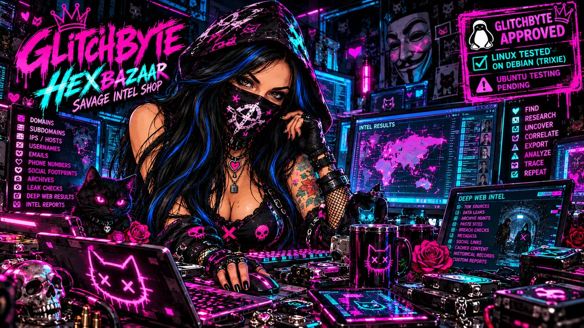
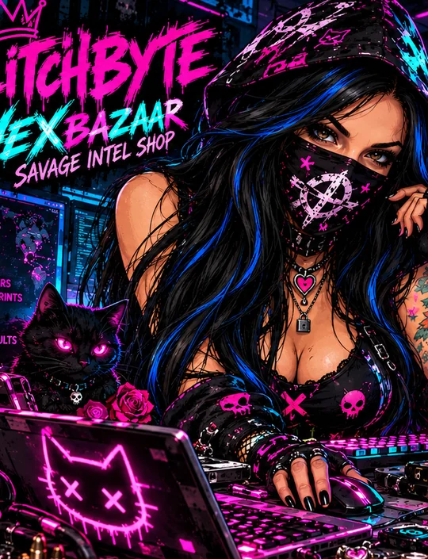
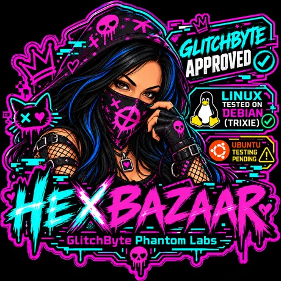

2026 // ROSIE PHANTOM EDITION⌂ BACK TO MASTER HUB
PHANTOM ART VAULT
The original Rosie Phantom workshop art and the exact user-approved PHANTOM SPINE v0.2.0 cover. Artwork is independent from verified research functionality.




This gallery doesn't endorse every tool as tested. The Debian testing seal is specific to HEXBAZAAR.